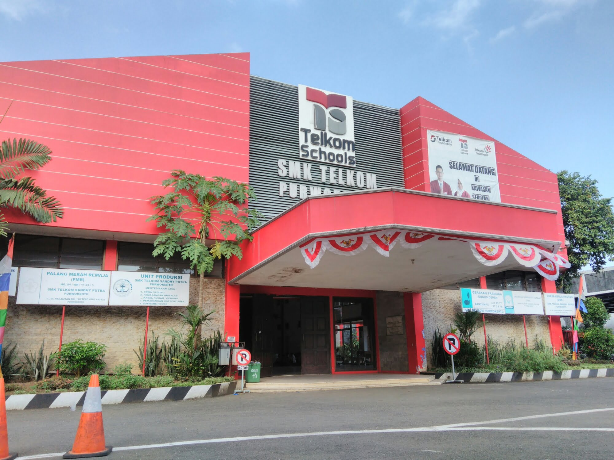

<!DOCTYPE html>
<html lang="en"></html>
<head><title> SMK Telkom Purwokerto</title></head>
<body style="background-color:black;">
    <header>
        <div id="container">
            
            <center>
                <h2> Tetang SMK Telkom Purwokerto</h2>
            </center>
        </div>
    </header>
    <hr>
    <nav>
        <table align="center" cellspacing="5" cellpadding="5">
            <tr>
                <td><a href="index.html">Home</a></td>
                <td><a href="profile.html">Profil</a></td>
                <td><a href="kontak.html">Kontak</a></td>
            </tr>
        </table>
    </nav>
    <hr>
    <h2> SMK Telkom Purwokerto</h2>
    
<style type="text/css">
    h2,h4,footer {
        color: red;
    }
</style>
<style type="text/css">
    li,p {
        color: white;
    }
</style>
    <h2> Profil SMK Telkom Purwokerto</h2>
    <p>
        SMK Telkom Purwokerto adalah sekolah kejuruan swasta yang didirikan, diberdayakan dan beroperasi di bawah naungan Yayasan Pendidikan Telkom.
        Hingga saat ini, SMK Telkom Purwokerto telah mampu menorehkan catatan prestasi, baik dari tingkat kabupaten dan provinsi, hingga nasional dan internasional.
    </p>

    <h2> Prestasi SMK Telkom Purwokerto</h2>
    <h4> Tingkat Asia</h4>
    <ul>
        <li>Juara I Karate Kumite Kadet Putra -52 kg tahun 2018</li>
    </ul>
    
    <h4> Tingkat Nasional</h4>
    <ul>
        <li>Juara I Nasional “Motion Graphic” Himpunan Mahasiswa IT UNJ tahun 2018</li>
        <li>Juara II Nasional “Motion Graphic” Himpunan Mahasiswa IT UNJ tahun 2018</li>
        <li>Juara I LKS SMK Bidang Lomba “Telecom Distribution Technology” tahun 2012</li>
        <li>Juara I OSTN II SMK Bidang Lomba “Matematika Teknologi” tahun 2009</li>
        <li>Juara I LKS SMK Bidang Lomba ” Telecom Distribution Technology” tahun 2008</li>
    </ul>

    <h4> Tingkat Provinsi</h4>
    <ul>
        <li>Juara I LKS SMK Bidang Lomba “IT Software Application” tahun 2018</li>
        <li>Juara I Nilai Rata-rata UN Tertinggi Tiga Tahun Berturut 2012-2014</li>
        <li>Juara I English Debate Competition tahun 2009</li>
        <li>Juara II English Debate Competition tahun 2009</li>
        <li>Juara II POPDA Bidang Lomba “Taekwondo” tahun 2009</li>
    </ul>
    <p><strong>Mau sekolah MUDAH, Mau kerja TIDAK SUSAH</strong></p>
    <hr>
    <footer>
        Copyright &copy; Kelompok 9
    </footer>
</body>